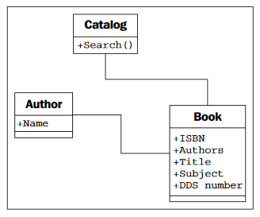
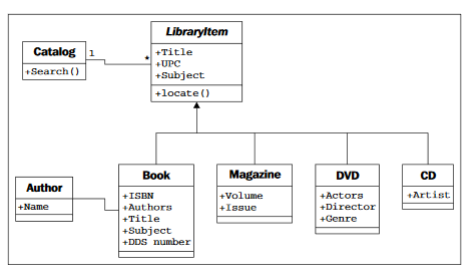
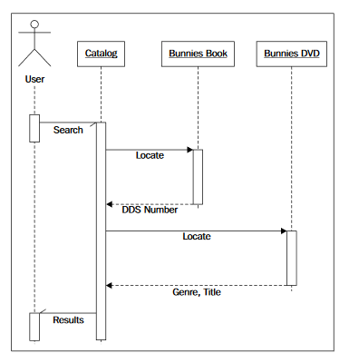
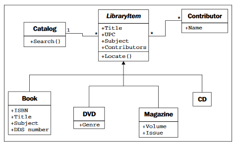
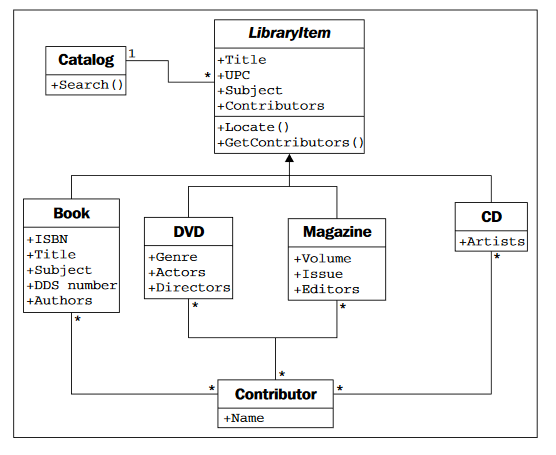
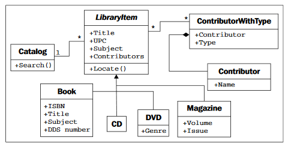
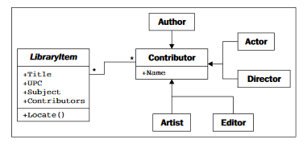

Tu bi trebali pisati nešt o povijesti, namjeni i primjeni objektnog programiranja. I nešt općenito o njemu. Jer toga nema u ovoj knjizi. Ono je više nekakav tutorial.
Pojam objekta svima nam je poznat – konkretna stvar koju možemo osjetiti, dodirnuti i rukovati njome. Još kao mala djeca naučimo čemu koji objekt služi, koja mu je namjena i kako se koristi njime. Definicija objekta u kontekstu razvoja softvera zapravo je vrlo slična. Softverski objekti naravno nisu materijalne stvari koje se može dotaknuti, osjetiti ili podići, no oni jesu modeli nečega što može napraviti određene stvari i nečega čemu se nešto može napraviti. Službeno, objekt je skup podataka i njima pripisanih ponašanja.
Nakon što smo se upoznali sa pojmom objekta, zanima nas što znači pojam „objektno orijentirano“. Navedeni pojam predstavlja nešto što je funkcijski usmjereno prema modeliranju objekata. Ovo je jedna od mnogih tehnika korištenih za modeliranje kompleksnih sustava putem opisivanja skupa objekata u međusobnoj interakciji. Pojmovi usko povezani uz pojam objektno-orijentiranog su objektno orijentirana analiza, objektno orijentiran dizajn i objektno orijentirano programiranje. Analiza, dizajn i programiranje su zapravo koraci pri bilo kojoj vrsta razvoja softvera.
Objektno orijentirana analiza (OOA) je proces proučavanja problema, sustava ili nekog zadatka i identificiranja objekata koji se pojavljuju u tom problemu i interakcija između tih objekata. U procesu analize se zapravo određuje što se treba napraviti te je rezultat ovog procesa lista zahtjeva. U razvoju softvera, analiza se najčešće sastoji od intervjuiranja korisnika, proučavanja aktivnih procesa i eliminacije mogućnosti.
Objektno orijentiran dizajn (OOD) je proces pretvaranja zahtjeva iz prethodnog koraka u specifikaciju implementacije. Programer mora imenovati objekte, definirati metode i funkcije i formalno specificirati koji objekti mogu aktivirati koje funkcije. Svrha ove faze je dobiti kompletnu implementaciju koja zadovoljava sve potrebe zadatka.
Objektno orijentirano programiranje (OOP) je završni proces u kojem se jasno definirani dizajn pretvara u ispravan i funkcionalan program koji izvršava upravo ono za što je i napravljen.
Nerealno je očekivati da će se svaki razvoj programa odvijati idealno u ove tri faze. Koliko god mi pokušavali odvojiti ove tri faze, uvijek će isplivati stvari koje će se tijekom dizajna trebati dodatno analizirati ili stvari koje će se tijekom programiranja trebati dodatno definirati u dizajnu. Većina suvremenog softvera razvija se na način da se prvo modelira, dizajnira i programira mali dio zadatka i onda se on postepeno širi kako bi se poboljšali određeni dijelovi i dodali novi.
U prethodnom smo poglavlju definirali što je to objekt. No kako ih razlikovati? Na primjer, i kruške i jabuke su objekti, no jasno je da to nije ista stvar. Zamislimo sada da radimo aplikaciju za farmu za uzgoj voća. Pretpostavimo da se jabuke skladište u bačve, a kruške u košare. Na taj način dobivamo četiri vrste objekta: jabuke, kruške, bačve i košare. U objektnom programiranju umjesto termina „vrsta objekta“ koristi se termin „klasa“ tako da po službenoj terminologiji dobili smo četiri klase objekata. Razlika između objekta i klase je ta što klase zapravo opisuju objekte. Uzmimo za primjer da na stolu imamo tri naranče. Svaka od tih naranča je zaseban objekt, no sve tri naranče pripadaju istoj klasi. Prema tome, na stolu imamo tri objekta jedne klase. Veze između klasa prikazuju se klasnim dijagramima. (Slika 1., Klasni dijagram na slajdu 28). Dijagram jasno prikazuje da je jabuka na neki način povezana sa bačvom i kruška sa košarom, no vrlo često će se dijagram koristiti kako bi se iz njega iščitalo mnogo više informacija. Malo opširniji i detaljniji dijagram prikazan je na Slici 2. (Slika 2, Klasni dijagram na slajdu 30) Osim što povezuje određene klase on strelicom i tekstom prikazuje da jabuke idu u bačve, dakle imenuje relaciju između ove dvije klase i pokazuje što ide u što. Ovaj dijagram nas također informira i o mogućoj količini nekog objekta u određenoj relaciji. Jedna košara može sadržavati više, konačno mnogo krušaka (na dijagramu prikazano znakom „ * „) dok naranče mogu ići samo u jednu košaru. Navedeni broj se naziva mnogobrojnost objekta.
Podatak objekta predstavlja individualne karakteristike određenog objekta. Klasa navodi specifičan skup karakteristika koje su zajedničke svim objektima te klase. Svaki objekt može imati različite podatke za neku karakteristiku. Na primjer, svaka od tri naranče na stolu može imati različitu masu. Tada bi klasa naranče imala masu kao jedan od atributa. Sve naranče imaju atribut mase, ali se vrijednost atributa mase razlikuje od naranče do naranče. Vrijednost atributa, naravno, ne mora biti jedinstvena. Moguće je i prihvatljivo da dvije naranče, odnosno dva objekta imaju istu masu. Atribute se često naziva članovima, odnosno svojstvima ovisno o literaturi. Vratimo se na primjer farme voće. Farmeru bi svakako bilo korisno znati neke informacije i karakteristike objekata. Na primjer, zanima ga masa i datum berbe kruške, boja jabuke, lokacija košare, veličina bačve i tako dalje. Na slici 3 vidimo primjer detaljnijeg dijagrama koji osim svojstva objekata, za svako svojstvo navodi i tip podatka. (Slika 3, Klasni dijagram sa slajda 32) Atributi su najčešće osnovni tipovi podatka koji se pojavljuju u većini programskih jezika. Cijeli broj (integer), decimalni broj (floating-point number), niz znakova (string) su najosnovniji primjeri tipova podataka. Tipovi atributa mogu također biti predstavljeni i kao strukture podataka (liste, stabla, grafovi…).
Ponašanja (behaviors) su radnje koje se izvršavaju nad objektima. Ponašanja (behaviors) koja se mogu izvršiti na određenoj klasi objekta zovu se metode. Baš kao funkcije u matematici, metode primaju ulazne parametre i vraćaju vrijednosti. Parametri, u slučaju metoda, su objekti nad kojima onda ta metoda izvršava željene radnje i vraća rezultate te radnje. Moguća akcija na primjeru farme voća je berba krušaka. Akcija ubiranja funkcionirala bi tako da bi dodala jednu krušku na listu krušaka pod klasom košara. Mnogo je mogućih akcija za ovaj konkretan primjer: prodaja krušaka iz košare, odbacivanje trulih jabuke i tako dalje.
Povežimo novonaučeno znanje o objektno-orijentiranom programiranju tako što ćemo proći kroz nekoliko iteracija objektno-orijentiranog dizajna na primjeru iz stvarnog svijeta. Za primjer uzet ćemo knjižnicu. Moderne knjižnice prate svoj inventar preko web sučelja. Na taj način svaki član knjižnice može pratiti dostupnost određene knjige od kuće i ako je knjiga slobodna može ju rezervirati kako bi bio siguran da tu knjigu neće uzeti netko prije njega.
Počet ćemo s analizom. Knjižničar ima zadatak napraviti novi katalog knjiga u novom programu jer je dosadašnji star i neugodan za korištenje te ne daje dovoljno podataka o knjigama. Katalog sadrži popis knjiga. Preko kataloga se pretražuju knjige po temi, naslovu ili autoru. Svaka knjiga je označena preko ISBN-a, međunarodnog standardnog knjižnog broja (International Standard Book Number). Svaka knjiga ima ima i svoj DDS, broj dodijeljen prema Deweyevoj decimalnoj klasifikaciji (Dewey Decimal System) kako bi se knjiga pronašla na kojoj je polici. Prema ovoj analizi, knjiga nam je najvažniji objekt s nekoliko svojih atributa. Isto tako želimo spremiti nekoliko podataka o autoru pa je autor isto objekt. Nadalje neke knjige imaju više autora pa svakoj knjizi treba dodijeliti listu autora. Veza između autora i knjige je udruženje (association). Prikazat ćemo sve UML dijagramom.
Međutim, u knjižnici ne postoje samo knjige. Tu su časopisi, video i audio zapisi. Nijedno od toga nema ISBN broj. Časopisi imaju imena, brojeve, godina izdavanja, video zapisi su uglavnom na DVD-u i imaju svoj naslov, glumce, redatelja i žanr. Audio zapisi su na CD-u i njih možemo smatrati audio knjigama s autorom i naslovom. Nastao je problem jer više ne možemo koristiti samo objekt knjiga. Treba nam naslijeđivanje (inheritence). Klasificirat ćemo sve na objekt stvar. Pod stvari podrazumijevamo objekte knjiga, časopis, DVD i CD zapis.
Prilikom pretraživanja određene riječi, korisnik pošalje zahtjev katalogu i on prikaže sve stvari koje je pronašao, bez obzira da li se radi o knjizi ili ne, sve stvari su iste u ovom slučaju. Pozivamo se na lociranje (locate()), metodu koja nam govori što je ta ustvari, koji objekt i govori nam gdje se nalazi u knjižnici. Prikazujemo UML dijagram sekvenci koji će nam, za razliku od dijagrama klasa koji prikazuje odnose među objektima, pokazati koje se poruke razmjenjuju između pojedinih objekata. Pune crte pokazuju na koju smo se metodu pozvali, a isprekidane crte prikazuju nam traženi atribut. Na navedenom dijagramu tražimo sve objekte koji sadrže riječ “zečići” (eng. bunnies).
S obzirom da nam se u svakom objektu pojavljuje autor, a on može biti glumac, redatelj, pisac itd. treba nam klasa osoba. Za tu klasu nam je dovoljno znati kako je on doprinosio tom djelu pa će nam dovoljno biti objekt doprinositelj. Prebacit ćemo atribut koji nam prikazuje osobu na njegovog roditelja na UML dijagramu, tj. na doprinositelja.
Relacija između doprinositelja i stvari je mnogi-na-mnoge (eng. many-to-many relationship). Kako jedna stvar može imati više doprinositelja, bolja opcija je jednostavno dodati atribute na svaku podklasu, autora za knjige, glumca i redatelja za DVD, itd. Zatim svaku podklasu upariti s doprinositeljem. Time izgubimo dosta polimorfne elegancije, koju ćemo vratiti tako da na objekt stvar dodamo metodu uzmi_doprinositelja. Na taj način katalog ne mora znati koji atribut objekt traži. UML dijagram sada izgleda ovako:
Ovaj dijagram nam ne djeluje stabilno, otežava nam održavanje i proširivanje kataloga. Ima previše relacija i previše klasa na koja bi utjecala i mala modifikacija na bilo kojoj klasi. Odgovara nam nasljeđivanje. Vratimo se na prijašnji dijagram koji je imao doprinositelje spojene direktno na stvari. Dodat ćemo novu klasu koja će identificirati tip doprinositelja. Ovo je važan korak u objektno-orijentiranom dizajnu. Uvodimo klasu u dizajn koja će opisivati druge objekte, umjesto da modificiramo neki od inicijalnih zahtjeva. Rekonstruiramo dizajn tako da odgovara objektima u sustavu, radije nego da rekonstruiramo objekte u stvarnom životu. Rekonstrukcija je nužan proces u održavanju programa i dizajna. Cilj rekonstrukcije je brisanje duplikata i kompliciranih relacija kako bi dobili jednostavniji i elegantniji dizajn. Naš dijagram sad sad ima dodan tip doprinositelja, a na stvar ćemo dodat atribut doprinostelja.
Dizajn temeljen na naslijeđivanju ima prednost jer nam omogućuje dodavanje novih doprinositelja bez dodavanja novih klasa u dizajn. Naslijeđivanje je najkorisnije kad na podklase trebaju specijalizaciju. Specijalizacija je stvaranje ili mijenjanje atributa ili ponašanja na podklasi čineći je različitom od klase roditelja. Nema smisla stvoriti puno praznih klasa samo da bi identificirali različite objekte. Ako pogledamo verziju dijagrama samo za doprinositelje imat ćemo puno podklasa koje ustvari neće raditi ništa.
Neki put je važno prepoznati kad ne trebamo koristiti objektno-orijentirani princip. Ovaj primjer nam služi kako bi vidli da su objekti samo alati, a ne nužno i pravila.